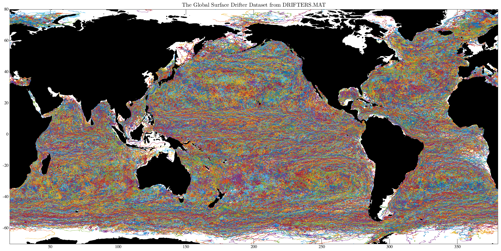

ABOUT_DRIFTERS Global surface drifter dataset from the Global Drifter Program. _______________________________________________________________________  _______________________________________________________________________ DRIFTERS.MAT is a matfile containing the global surface drifter dataset from NOAA's Atlantic Oceanographic and Meteorological Laboratory (AOML) Global Drifter Program (GDP) Drifter Data Assembly Center, online at http://www.aoml.noaa.gov/phod/dac/index.php All gaps have been filled with linear interpolation, and only drifter records with at least one week of data are returned. The current version of DRIFTERS.MAT contains data through June, 2015. LOAD DRIFTERS loads the structure DRIFTERS, with the following fields: drifters.about Pointer to this document drifters.id Drifter ids [19854 x 1 array] drifters.buoy Drifter buoy type [19854 x 1 array] drifters.num Date in DATENUM format {19854 x 1 cell} drifters.lat Latitudes {19854 x 1 cell} drifters.lon Longitudes {19854 x 1 cell} drifters.t Temperature in centigrade {19854 x 1 cell} drifters.cv Velocity u+iv in cm/s {19854 x 1 cell} drifters.cvo AOML velocity u+iv in cm/s {19854 x 1 cell} drifters.flag Drogue presence flag {19854 x 1 cell} NUM, LAT, LON, T, CV, and FLAG are all cell arrays, with one drifter per cell. BUOY and FLAG are metadata information described in more detail below. The two velocity fields CV and CVO differ in their computation. CVO is the original velocity product distributed by AOML, whereas CV is computed from the 6-hourly positions using LATLON2UV. A number of routines are available in JLAB to work directly with such cell arrays, see JCELL. In particular, CELLPLOT will plot such data. After 'load drifters', type 'use drifters' to map the structure fields into named variables in the workspace--id, num, lat, lon, etc. To plot the entire drifter dataset, as in the above figure, type load drifters, use drifters, cellplot(380,lon,lat), topoplot where 380 specifies the right-hand axis of the plot, chosen to be the longitude of the southern tip of Africa. To convert the cell arrays into one long column vector, with a NAN separating each drifter, type 'cell2col(num,lat,lon,t,cv);'. DRIFTERS.MAT is distributed as a part of JDATA, a supplement to the software toolbox JLAB, and is available at http://www.jmlilly.net. __________________________________________________________________ Metadata The fields BUOY and FLAG give metadata information. BUOY is the drifter design type according to the following code: 1=SVP, 2=SVPB, 3=SVPC, 4=SVPBS, 5=SVPW, 6=SVPBW. FLAG is true when the drifter's drogue is estimated to be present, and false otherwise. __________________________________________________________________ Dataset creation The ASCII files on which DRIFTERS.MAT is based are available for download from AOML at http://www.aoml.noaa.gov/envids/gld/FtpInterpolatedInstructions.php For completeness, the m-file ABOUT_DRIFTERS also contains the processing steps used in the creation of DRIFTER.MAT. If you wish to do this yourself, with JLAB on your search path, 'about_drifters --create' will recreate DRIFTERS.MAT by reading in the original data as downloaded from AOML. This will take a while. You'll need to make sure to put the directory containing the files on your Matlab search path using ADDPATH, e.g. 'addpath ~/Data/aoml'. As of March 2016, the AOML drifter dataset consists of three files: buoydata_1_5000.dat buoydata_5001_10000.dat buoydata_10001_dec15.dat These should placed in the directory specified above in order for ABOUT_DRIFTERS.M to create DRIFTERS.MAT. Note that the velocity CV in DRIFTERS.MAT is computed from latitude, longitude, and time using LATLON2UV. It is not quite the same as the velocity field produced by AOML. __________________________________________________________________ See also JDATA, ABOUT_FLOATS. 'about_drifters --f' generates the sample figure shown above. Usage: about_drifters about_drifters --create __________________________________________________________________ This is part of JLAB --- type 'help jlab' for more information (C) 2007--2016 J.M. Lilly --- type 'help jlab_license' for details